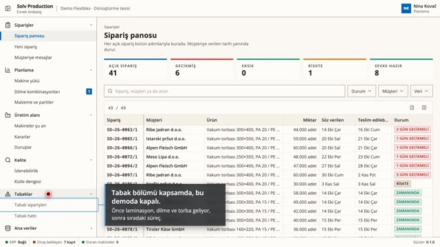
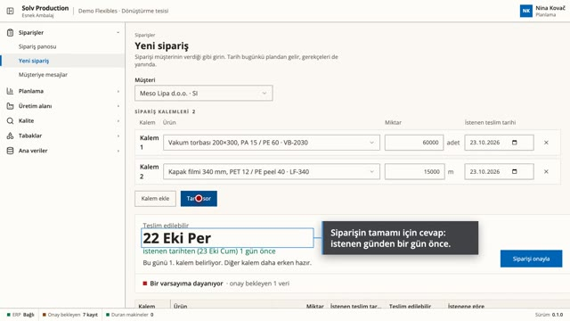
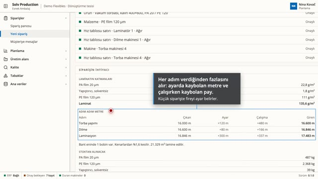
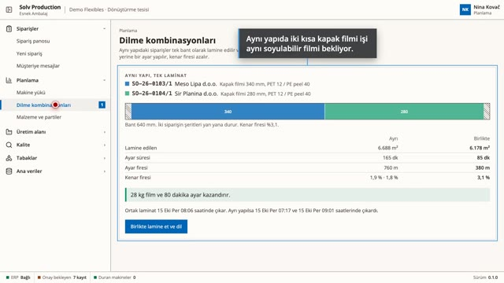
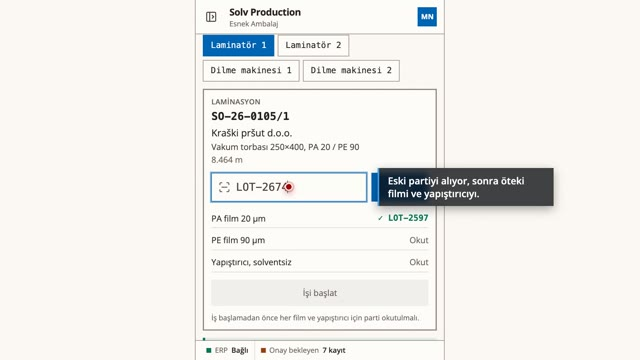
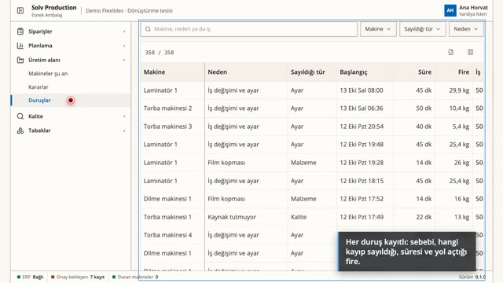
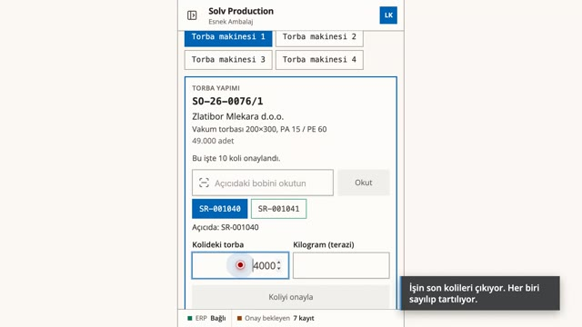
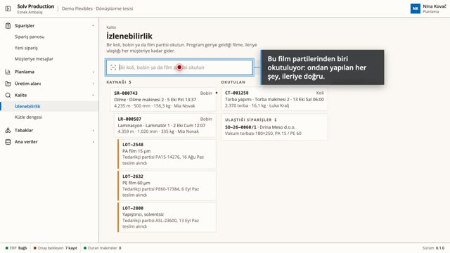
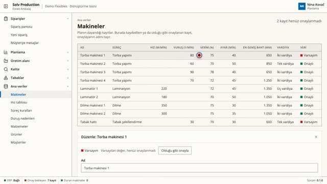

Solv Production · Esnek Ambalaj
Siparişten teslim tarihine kadar, üç cihazda. Sipariş girildiği anda tarih gerekçesiyle çıkar. Atölye her bobini bildirir. Bir koli tek okutmada izlenir. Her rakam, verisinin ne kadar onaylı olduğunu gösterir.
Videoları bilgisayarda, büyük ekranda ve tam ekran izlemenizi öneririz.
-

Genel bakış Tek program masada, vardiya amirinin tabletinde ve her makinedeki terminalde çalışır. Tesisin kullandığı ERP'nin yanında durur. -

Müşteri arar, tarih çıkar Sipariş birkaç kalemle girilir. Her kalemin tarihi bütün gerekçesiyle gelir. Kür süresi bekleme olarak görünür. Bir varsayım onaylanınca tarih yeşile döner. Müşteri onayı kendi dilinde alır. -

Her kilo nereden gelir Laminat katlarıyla görünür. Fire adım adım hesaplanır. Alınacak film belli olur. Siparişin gününü hangi kalemin belirlediği görünür. Partiler en eskiden başlar. -

Kapasite, kür ve iki siparişe tek laminat Makine yükü iki hafta ileriyi gösterir. Program iki siparişi tek laminatta birleştirmeyi önerir, film ve ayar süresi kazandırır. Planlamacı onaylar. -

Makine başında Operatör partileri okutur, program en eskisini önerir. Yanlış ağırlık yakalanır. Bobin etiketi basılır. Duruş firesiyle kaydedilir. -

Bir arıza ve maliyeti Vardiya lideri her duruşu tabletten görür. Aynı sabah geciken siparişler panoya düşer. -

Son koli ve müşteri Son koli bitince sipariş toleransı içinde tamamlanır. Müşteri aynı dakika haber alır. -

Bir şikâyet, tek okutmada Koli film partilerine kadar geri, müşterilere kadar ileri izlenir. Kütle dengesi kimsenin yazmadığı kaybı gösterir. -

İlk gün kırmızı, sonra yeşil Program tesisin kendi verisiyle başlar. Henüz onaylanmamış bilgiler kırmızı görünür ve tek tek onaylanır.
Demo tesis: müşteriler, siparişler ve rakamlar kurgudur. Makineler, kurallar ve veri kaynakları programın gerçek bir tesisten okuduklarıdır.
Solv · solv.com.tr